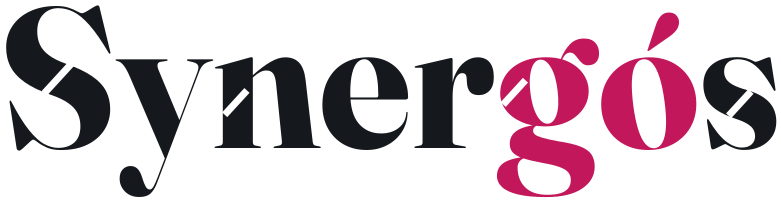
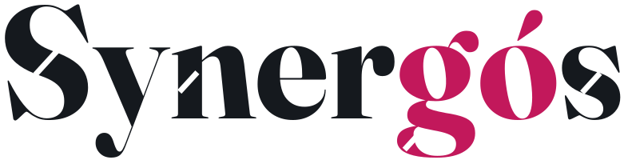

Propuesta: Fraunces convertida a vector propio, cuatro cortes (S, n, g, s) paralelos al acento de la ó. Ángulo entre el corte y la línea base: 137,5 grados, el ángulo áureo.

La misma pieza sobre fondo oscuro
Reducción: los cortes aguantan hasta tamaño de cabecera de LinkedIn; a tamaño de avatar se pierden y se usaría solo el "gó".

Alternativas: corte en la panza baja de la g (izquierda) y sin corte en la n (derecha)